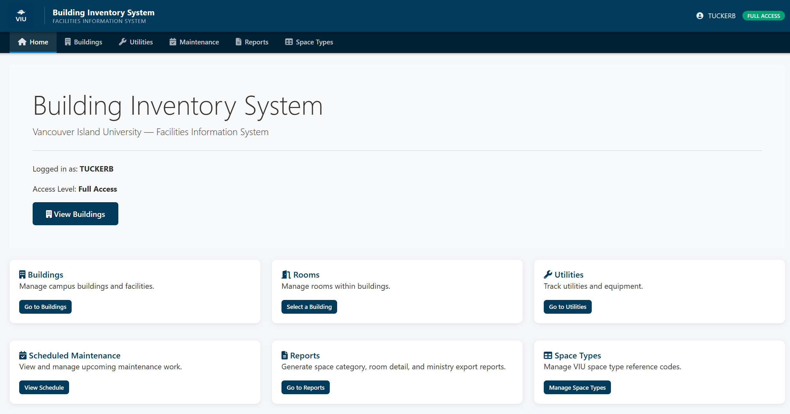
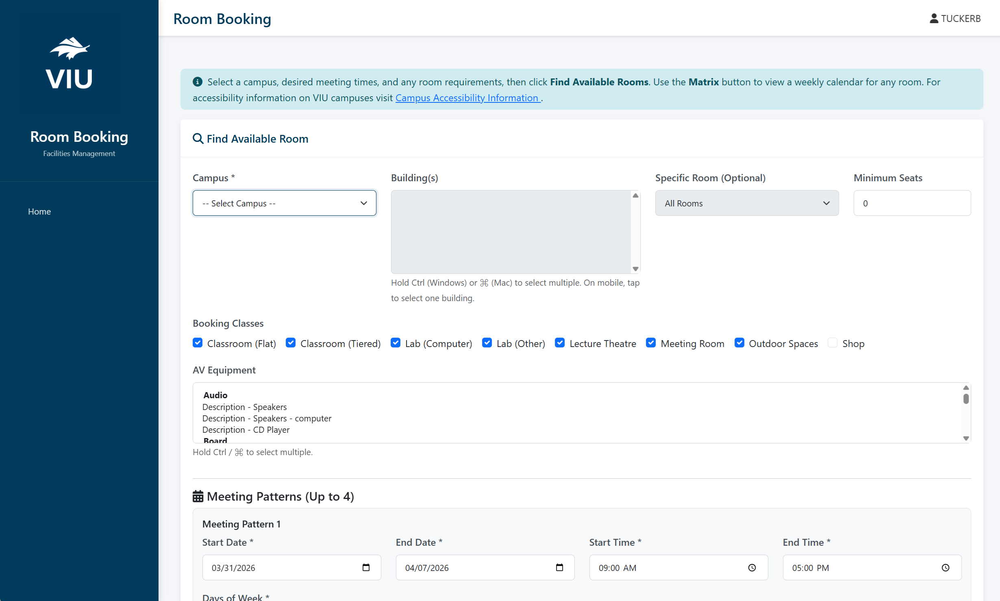

Case Studies
Real legacy systems, real metrics, real production deployments. Every project below shipped with full tests, CI/CD, and documentation — and every client owns the codebase.
The pattern you'll see repeated:
Aging legacy system (Classic ASP, .NET Framework, Oracle PL/SQL). Traditional vendor quote: months or years, six-figure price tag. My approach: comprehensive context documents + AI agents executing against a phased plan. Same scope, delivered in days, with full tests and zero downtime to production. Below are three concrete examples.
Facilities Information System: Classic ASP → .NET 8 Blazor, the institutional playbook

Problem
A university's Facilities Information System — used daily to manage buildings, rooms, utilities, maintenance, and reporting across multiple campuses — was running on Classic ASP with VBScript. The aging codebase was difficult to maintain, lacked modern security practices, and couldn't support responsive design or modern CI/CD workflows. A traditional vendor would have scoped this as a multi-month rebuild.
Approach
Seven weeks of AI-augmented development as near-sole author — 66 commits across 14 branches, not a one-shot generation. I extracted all business logic from the legacy Oracle/Classic ASP system and rebuilt it in .NET 8 Blazor Server (Dapper, Oracle.ManagedDataAccess.Core), preserving the existing Oracle schema and SSO. Cookie-based SSO reuses the same WEB_LOGIN_TOKEN that the legacy Classic ASP apps use — no dual-auth required. Solved the Blazor Server SSR/Interactive prerendering auth problem cleanly via PersistentComponentState. Full GitLab CI with JUnit + Cobertura coverage artifacts, and a synchronous IIS deploy pattern (appcmd stop apppool + robocopy /MIR + restart in finally) that avoids the file-handle contention plaguing legacy .NET deploys.
Result
Shipped to production with zero breaking changes to the underlying Oracle schema or SSO. The architecture became the institutional playbook — I wrote the modernization guide used as a reference for future Classic ASP → .NET 8 conversions across the organization. The assessment behind this effort catalogued ~90 additional legacy apps for the broader roadmap.
Room Booking System: rebuilding a 705K-line PL/SQL app in 5 days

Problem
A university's room booking system relied on a Classic ASP front-end backed by a 705,714-line Oracle PL/SQL package. The legacy system used XML DOM to transfer data between the database and browser, had no mobile support, and offered limited conflict detection. The complexity of the PL/SQL package made changes risky and time-consuming. A traditional vendor bid would have been months of work and six figures.
Approach
Delivered end-to-end in 5 days as sole author — 49 commits across 24 branches of iterative, tested work. Replaced all XML-based Oracle calls with direct parameterized SQL, rebuilt as .NET 8 Blazor Server on the same schema and SSO as the rest of the modernization program. Implemented a color-coded availability matrix with real-time conflict detection (green/yellow/red). Maintained full compatibility with the existing Oracle database, SSO authentication, and 4-level privilege hierarchy. Includes the hard-won fixes — persisted Data Protection keys for iPhone compatibility, circuit-crash guards for the SSO redirect flow, selective antiforgery disable on Blazor endpoints.
Result
Delivered technically ready for production and currently in QA, awaiting institutional go-live approval (organizational, not engineering). The modernized system features a mobile-responsive interface, parallel authentication checks, and a full GitLab CI/CD pipeline. Reference available on request.
Custom Oracle MCP Server: extending Claude with a first-class database tool
Problem
I use Claude Code daily for modernization work. The public Oracle MCP examples don't handle the kind of enterprise Oracle environment I run against — LDAP-based TNS name resolution requires thick-mode Oracle client init, which most samples skip. And running against a live Oracle estate needs guardrails: read/write separation, row limits, cross-schema introspection, and the ability to connect to multiple databases from one server. No off-the-shelf MCP gave me that.
Approach
Built and shipped a TypeScript MCP server in a day. Stack: @modelcontextprotocol/sdk + oracledb + zod on Node 20. Thick-mode init so LDAP aliases resolve. Multi-database support via an ORACLE_DATABASES env list — one connection pool per database, selectable per call. Five tools: query (validated SELECT/WITH only), execute (DML/DDL with opt-in auto-commit), list_schemas, list_tables, describe_table. Row-limit enforcement with explicit truncation messaging so the agent knows when it's seeing partial results. Cross-schema introspection via ALL_* views, scoped to the connected user's privileges. Optional Oracle wallet support.
Result
Wired into the team's shared .mcp.json and running as a daily driver for Oracle work. The ability to extend AI tooling — not just consume it — is what separates AI-accelerated engineering from AI-adjacent consulting. Source: github.com/billski/Claude-Oracle-MCP.
More modernization wins
- ▸ ~90-app modernization assessment. Authored a webroot-wide modernization catalog — inventory, effort estimates, recommended order. The institutional playbook behind the $2,500 Modernization Assessment service.
- ▸ VIUPortal (Classic ASP SSO landing → .NET 10 Blazor). Replacement for the legacy sso/viulogin.html. Direct ADFS SAML flow, impersonation with original-user privilege checks, CSP hardening. 7 days, active development.
- ▸ SABC SIMS integration. Shipped in 2 days — the fast counterpart to the 7-week FIS rebuild.
- ▸ Crystal Reports → QuestPDF. Replaced legacy licensed reporting in the Building Information System with .NET-native QuestPDF — eliminated licensing fees and deployment friction.
- ▸ SSO landing page + tag system. Designed an Oracle schema (3 tables, triggers, cascading deletes), built 9 REST endpoints in C#, rewrote the SSO landing page UI with slide-over panels, toast notifications, and JSON/Mermaid export.
- ▸ CDW submission tool. In production. .NET web app with SignalR real-time progress, SSH/SFTP file transfer via SSH.NET with ED25519 keys, service account management, GitLab CI with automated tests. Pivoting to SharePoint in 2026.
- ▸ Network-drive → local-dev team migration. Moved a team of six and 30+ repositories from server-based manual development to feature-branch workflow with health-check-gated GitLab pipelines, multi-environment release, rollback automation. Authored the es-handbook onboarding docs.
Let's Build Your Success Story
Every engagement starts with a conversation.
Book a Free Discovery Call